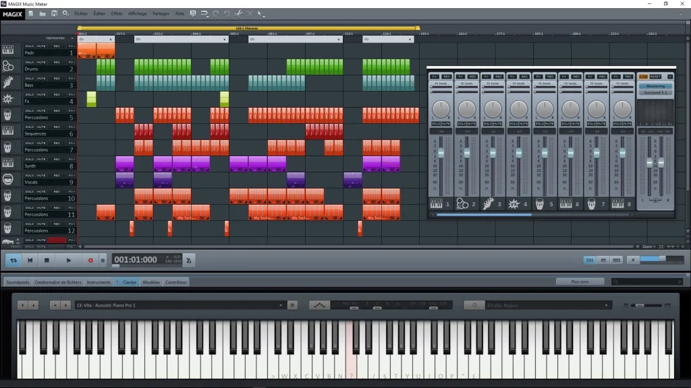
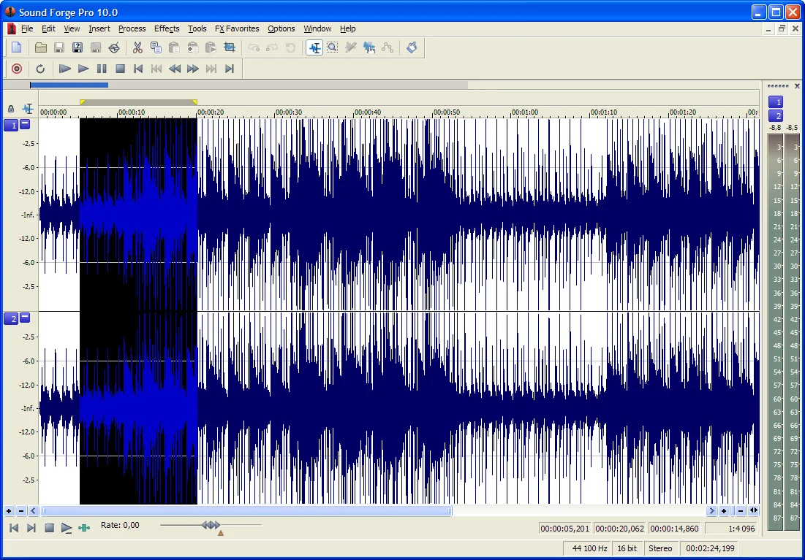
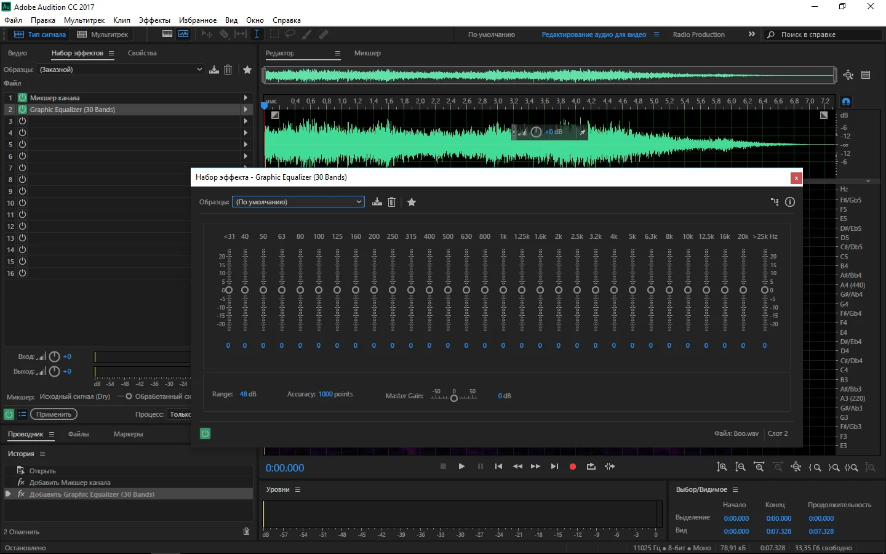
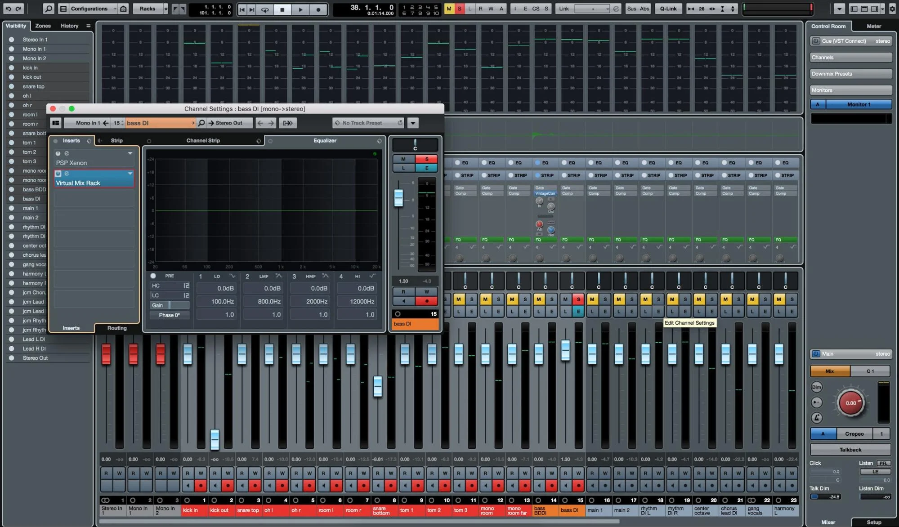
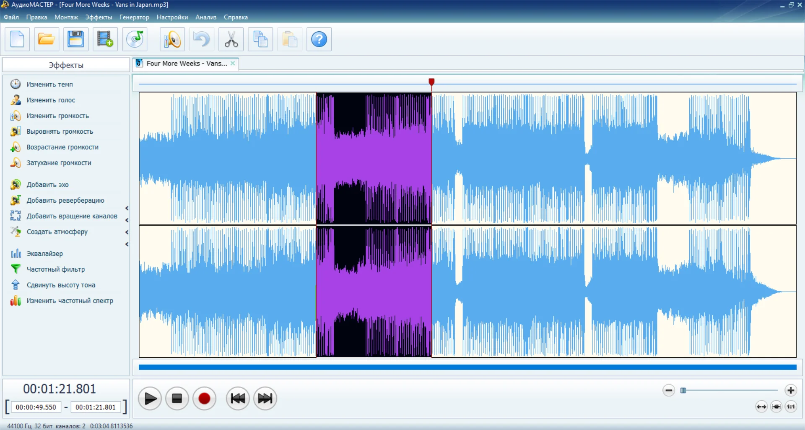

Приветствуем вас на разделе сайта Проект КА!0Б. Здесь вы получите необходимую информацию по программам, проверенным лично создателем сайта, для композиторства!

–MAGIX Music Maker – Легкое программное обеспечение для звукозаписи в домашних условиях. Оно подходит для диджеев и начинающих музыкантов. Также ПО отличается большим количеством функций для настройки аудиокомпозиции и захвата контента с микрофона или гарнитуры.
Плюсы:
–Импорт и экспорт известных мультимедийных форматов: WAV, MP3, OGG Vorbis, WMA, Quick Time, FLAC, AVI, WMV, audio для CD дисков.
–Соединение нескольких аудиофайлов.
–Аудиоэффекты, интегрированный микшер и драм-машина.
–Коррекция и оформление аудиокомпозиций.
–Простой дизайн на русском языке.
Минусы:
–Про-версия стоит 4290 рублей.

–Sound Forge – Хорошее ПО для редактирования цифрового звука. Оно предлагает готовые эффекты для коррекции аудио, извлечение мелодии с CD-диска, кассеты и винила. Вы также можете записывать и создавать компакт-диски или озвучку для видео.
Плюсы:
–Создание материала профессионального качества с помощью семплов и микрофона.
–Оформление подкастов.
–Интерфейс легко настраивается и имеет несколько вариантов дизайна.
–Опция quickFX для установки плагинов для хоруса, фленджера и аудиоэффектов.
–Редактирование аудиоматериала одновременно на 6 каналах.
Минусы:
–Про-версия стоит 3490 рублей.

-Adobe Audition – вы можете воспользоваться программой для создания музыки на русском языке бесплатно. Adobe Audition входит в состав Creative Cloud и является подходящим инструментом для обработки, соединения и восстановления аудиоматериала. Вы можете использовать его как для одиночного, так и для многодорожечного редактирования. Он функционирует на ОС Виндовс и Мак и предлагает удобный русскоязычный интерфейс.
ПО содержит коллекции мелодий для мультфильмов, звуковых эффектов для аркад и современных игр, комичных пресетов. Также есть опция удаления фонового шума, нежелательного эха, объединение нескольких источников в одну аудиодорожку.
Плюсы:
–Функция ремикса для автоматической коррекции аудио.
–Настройка вокала и удаление нежелательных шумов.
–Визуальное исправление аудиоволны.
–Захват голоса с нескольких источников.
–Поддержка внешнего оборудования, включая микшеры или аудиоинтерфейсы.
Минусы:
–Пробный период в семь дней, далее ежемесячная подписка в 1622 рубля.

Cubase – Программа для сведения музыки, предназначенная для пользователей, которые хотят создавать и микшировать клубную музыку, акустику и вокал. Она также имеет множество аудиоэффектов и коллекцию звуков. Приложение подходит для Виндовс и Мак. Программное обеспечение позволит не только корректировать аудиоряд, но и создавать треки и биты. Новичок в Sample Track может оформить проект в игровой форме.
Плюсы:
–Увеличение или уменьшение темпа и длины аудиофайла.
–Автономная обработка треков и выравнивание звучания.
–Редактор ударных — создавайте идеальные ритмы и работайте над битами.
–VariAudio 3 для более точного управления переходами и дрейфами вокалиста.
–Более 80 эффектов (эквалайзер, задержка, реверберация и инструменты мастеринга).
Минусы:
–Высокая цена покупки — 9051 рубль.

АудиоМастер — Если вам необходим простой аудиоредактор для звукозаписи, наложения фильтров и коррекции треков, воспользуйтесь удобной программой для работы с музыкой. АудиоМАСТЕР предлагает простое меню, подходящее начинающим пользователям. Также функционал включает в себя конвертацию файлов в другие форматы, обрезку и склейку, наложение эффектов и повышение качества звука.
Плюсы:
–Импорт и экспорт материала во всех популярных форматах: MP3, FLAC, WAV, OGG.
–Извлечение аудиодорожки из видео.
–Изменение темпа воспроизведения и добавление эха.
–Встроенный эквалайзер и частотный фильтр.
–Софт бесплатный, работает на слабых компьютерах и поддерживает операционные системы Windows 11, 10, 8, 7 и XP, Vista.
Минусы:
–Особых минусов не замечено.